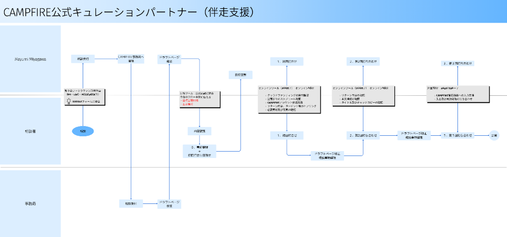

NEWSTAND＋ ／ 舞台裏
3
STEP
対応づけ ／ MAPPING
選んだ領域の、接点をたどる
相談の受付から公開まで、実際の業務を一つずつたどる。「どこで・誰が・何を手作業でやっているか」を1枚に。
こうして
12の接点
が見えてきました。

相談者・宮川さん・事務局の
3レーン
で接点を可視化
作る前に、まず
"見えるように"
する。手作業が集まる接点を、そのまま並べて眺める。
07 / 21